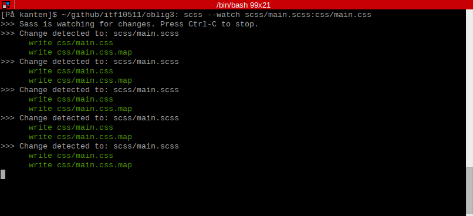

Sass
Syntactically awesome stylesheets (Sass) er en videreutvikling/utvidelse av CSS som gjør det lettere å jobbe med. Sass har en rekke muligheter, som blant annet variabler, partials, import, include og nesting.
For min del er nesting en av det jeg har etterlengtet mest i CSS, men variabler og imports er også fantastisk
Slik ser sass mappen min ut:
- fjerde/scss
- _mobile.scss
- _pc.scss
- _tablets.scss
- _variables.scss
- main.scss
Jeg har valgt å lage en scss fil for hver platform og bruke @import i main.scss. Slik blir det mer strukturert og lettere å holde styr på, main.scss blir også betraktelig kortere
Jeg har også brukt en _variables.scss som jeg bruker til box-sizing, border radius og box-shadow.
For å bruke sass trenger man en form for compiler da nettlesere ikke kan lese .sass/.scss filer. Det finnes en rekke programvare for dette, for å nevne noen: Scout-App, Compass.app, Koala, eller så kan man bruke terminalen slik jeg har gjort.
{kind=link}
Her er et lite utdrag fra main.scss fila mi:
a {
outline: none;
}
a:link {
color: #5d88a3;
}
a:visited {
color: #627987;
}
a:hover {
color: #86d8b2;
}
a:active {
color: #a7f2cf;
}
/* Mobiltelefoner */
@import 'mobile';
/* pc */
@import 'pc';
/* Tablet/Landscape */
@import 'tablets';
...
...
...